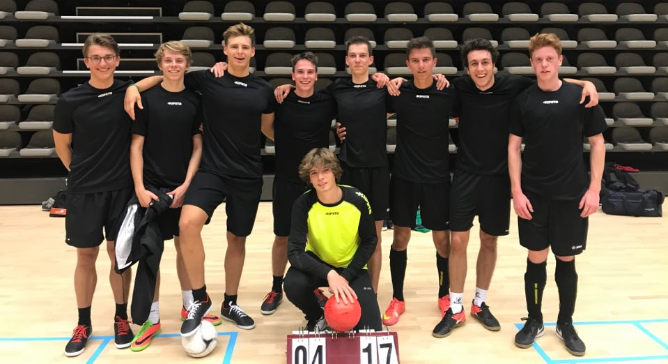

FC de lijsterboom
Wij zijn een recreatieve zaalvoetbalploeg. We spelen meer voor plezier te hebben onder kameraden dan dat we voor bekers strijden. Moest het nu zo uitkomen dat we mee kunnen doen aan competities dan doen we dit zeker, en zullen we ook gaan voor een overwinning. Maar we zullen niet vergeten dat we dit doen als een vriendengroep.
Locatie
We spelen al onze thuismatchen in zaal “de stip” in Linden. Dit is niet omdat we hier allemaal zo dicht bij wonen maar omdat we met de ploeg beslist hebben dat deze zaal veruit de beste was binnen het aanbod. Iets verder rijden zagen we allemaal wel zitten zodat we kunnen spelen in een kwalitatievere zaal. De zaal is zeer makkelijk te bereiken en er is een grote gratis parking. Er is elke match een tribune voorzien voor de supporters en een meet en greet met elke speler zit gratis bij in de beleving. Iedereen is dus zeker welkom om ons te komen aanmoedigen.